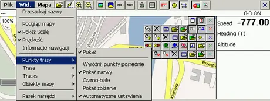
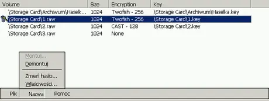

--------- Informacje ---------
---17.04.2023--------
Aktualizacja strony -
rezygnacja z php.
---17.04.2017--------
Zmiana serwera i adresu.
---17.04.2015--------
Wielka rozbudowa strony.
---13.07.2009--------
Zmiana wyglądu strony - optymalizacja.
---06.02.2004--------
Zalążek strony.
STRONA W BUDOWIE
Lokalizacje powstały na potrzeby komputera Jornada 720/728.
Większość plików umieszczona była pierwotnie na portalu jornada.m01.pl , jednak strona
już została zamknięta przez Mikołaja, a moje prace mogą się jeszcze komuś przydać...
Poniżej screny z programów i opisy.
Adobe Portable Reader
Spolszczenie i dostosowanie programu AdobeReader1.0 do naszej Jornady 720/728.
Wybrałem tą wersję ponieważ czterokrotnie szybciej wczytują się dokumenty niż w wersji
2.X!
Aplikacja wymaga do poprawnej pracy specjalnie spreparowanej biblioteki (nie znam autora
tej biblioteki), by wyświetlały się wszystkie okna, którą dołączyłem w archiwum.
Dopasowanie polegało na bardziej ergonomicznym rozmieszczeniu przycisków.
Zawartość archiwum przenieść w miejsce zainstalowanej oryginalnej aplikacji!
Reader.zip 793 KB 1.0 wce3 ARM
Avaya.wireless
Spolszczona wersja sterownika doskonałej karty Avaya wireless.
Dodatkowo dopasowałem okna dla wygody używania, oraz co ważniejsze usunąłem niepotrzebny
opis instalacji z grafiką, który instalował się w katalogu \Windows zabierając RAMu ponad
250 kb... czyli o 1/3 mniej niż oryginalnie!
206 KB 1.1.0_pl wce3 ARM
Anastazja/Asia 0.3.0
Klient ICQ dla poketPC
Wersja przetłumaczona i dostosowana do Handheldu Jornada.
Poprawiona wersja tłumaczenia programu. (Copyright (C) 2005/8 Andrej Czistjakow)
B-25.02.2008
51 KB 0.3.0_PL wce3 ARM 44
cMapCE
Dostosowany do rozdzielczości Jornady i program cMap CE. Poprawiłem tylko kilka okienek
(ich rozmiar i rozmieszczenie przycisków/elementów) oraz dodałem paski by "okna były
oknami" W myśl LICENCJI oprogramowania demonstracyjnego cMap CE:
"...7. Zezwala się na użytkowanie Oprogramowania w trybie DEMO przez osoby fizyczne
(użytkowników prywatnych) jeśli pobrali oprogramowanie ze strony www producenta, otrzymali
je na oryginalnym nośniku CD producenta, albo w taki sposób, który jest opisany na stronie
internetowej www.jmb.pl w pliku "aut_dys.txt" (jeśli taki plik istnieje)..."
Czyli najpierw pobieramy program ze strony http://www.jmb.pl/cmapce.html, instalujemy, a
następnie podmieniamy plik cMapCE.exe i dodajemy brakującą bibliotekę CELLCORE.DLL
(umieściłem razem w archiwum z dostosowaną wersją cMap CE).
Mapy można za darmo pobrać ze strony producenta: JMB
410 KB v4.001 DEMO wce3 ARM
CrdFmtMEarm_pl
Program do formatowania kart pamięci i dysków HD - PCMCIA. W pewnym sensie również do
"partycjonowania". Dodatkowym atutem programu jest pomiar przesyłu danych z karty (odczyt,
zapis i odczyt/zapis). W oknie możemy również odczytać strukturę karty (jeśli to CF to
umowne-cylindry, głowice i sektory) Wielkość pamięci, złącze pełną nazwę widzianą przez
system oraz sterowniki obsługujące urządzenie. Polecam przed dokonaniem pomiarów (w
szczególności pomiarów zapisu) zrobić kopię karty. Jeśli zmienimy domyślne ustawienia
karty podczas formatowania karta może być niewidoczna przez niektóre urządzenia (aparaty
tunery sat...). Jednym słowem używamy tego programu z rozwagą.
12 KB --- wce3 ARM
Czcionek

Czcionki WCE MFC Application Copyright © 2003.
Bardzo prosty program do oglądania kształtu czcionek.
Pisany pod większy wyświetlacz.... więc troszeczkę zmniejszyłem czcionkę i to wielkie okno
by zmieściło się na naszych jornadowych wyświetlaczach.
167 KB --- wce3 ARM
Dict_PL
Program do przeglądania słowników autorstwa: Alieksieja Sołowiowa przetłumaczona na
j.polski i dostosowana do Jornady. Poprawiłem kilka błędów i przetłumaczyłem. Wersja z
23.02.2008. Na tym programie można przeglądać miedzy innymi pliki z WIKIPEDII i nie
tylko!
34 KB 1.2.5_PL wce3 ARM
exe_pl
Program do zmiany ustalonego przez twórcę programu wersji systemu Windows CE, w którym ma
się uruchamiać np. Windows CE 4.2 zmieniamy na 3.00, oraz do podmieniana bibliotek
programowych (ich "odwołania" na inną nazwę zawierającą tyle samo liter!) Używamy z
rozwagą i nie spodziewajmy się 100% pozytywnego efektu, ale w wielu przypadkach jest
niezbędny! W porównaniu do oryginalnej wersji dodałem pasek pionowy- by odczytać cały
komunikat o błędzie, oraz spolszczyłem interfejs. Jak to zawsze bywa w świecie informatyki
bywa jedno się poprawia by inne popsuć ... Dzięki administratorowi forum, który wychwycił
błąd poprawiłem literówkę w interfejsie programu (przycisk zmień było zmień). Dostępna już
tylko poprawiona wersja.
4 KB wce2 ARM 44
EzViewer
Bardzo dobry program do szybkiego wyświetlania (również odbierania po IR) grafiki na
naszych handheldach autor Nishimura Masataka wersja v1.31_PL.
W archiwum mamy sam plik X.exe, podmieniamy po zainstalowaniu/skopiowaniu oryginału, by
cieszyć się polskim interfejsem.
Program dodatkowo troszeczkę odchudziłem z nam niepotrzebnych rzeczy.
Powinno się go używać z programem UltraG tego samego autora, który jak się uda również
przetłumaczony tu umieściłem!
48 KB v1.31_PL wce2 ARM
FTX_Browser_pl
Przetłumaczona na jezyk polski "nakładka" na IE modyfikująca dość znacznie ten program
dodając: nowe karty, obsługę programu w oknie, szybszą i bardziej ergonomiczną...
38 KB 0.9.0.7_pl wce3 ARM
HotKeys_PL
Przetłumaczona na język polski wersja programy Wolfganga Rolke do ustawienia klawiatury w
naszym Handheld'zie.
WERSJA FINALNA PL w 100% przetłumaczona
Poprawiona, dodałem brakujący przycisk [OK ]
9 KB 1.2_PL wce2 ARM - BRAK PLIKU!
JS_Overclock_pl
Przetłumaczony na język polski program do ustawienia częstotliwości taktowania procesora
naszego handheldu Jornada 720/728.
Proszę używać z rozwagą i przypominam, że nie wszystkie procesory mogą wytrzymać
częstotliwość 236 MHz, co może powodować zawieszenie komputerka, a w najgorszym przypadku
nawet uszkodzenie, dla tego proponuję używać częstotliwości z zakresu 162- 221 MHz
przetestowanego na wielu w/w Jornadach.
UŻYWASZ NA WŁASNE RYZYKO, nie ponosimy odpowiedzialności za ewentualne zniszczenia sprzętu
i danych!
3 KB _pl wce3 ARM
MDict_pl
Darmowa aplikacja MDict, do której przerobiłem słowniki z Xlatora.
Aplikacja spolszczona!
224 KB 2.4 wce3 ARM 54
Netfront33.pl
Plik Netfront33.exe do zamiany po zainstalowaniu Netfronta (program płatny, tylko trial
jest darmowy).
Po zamianie interfejs NetFronta jest w języku polskim. Proszę nie zmieniać nazwy pliku,
ponieważ utracimy naszą licencję (kod), która dotyczy tylko pliku o takiej nazwie na jaką
został zarejestrowany.
Prace trwają nad całkowitym spolszczeniem. Stan na teraz to:
Menu 99 %, Okna 70%, Alerty 80% ..... jeszcze troszeczkę pracy wymaga
Wersja translacji z 11.04.2008.
2 MB 3.3 wce3 ARM
PocketNotepad
Tillanosoft PocketNotepad (Version 1.0, Nov 10, 1999) - klon programu Notepad znanego w
"dużej wersji Windowsa" dodatkowo przetłumaczony.
17 KB 1.0 wce3 ARM
OKey_PL
Program do przypisania znaków do klawiatury, czyli możemy przypisać znaki regionalne ( np.
ą czy ę) pod nasze guziczki. Program został przetłumaczony na język polski.
14 KB b/d wce3 ARM
Opera 8.60_PL
Polska lokalizacja do Opera 8.60 for Windows Mobile (1682). Niestety do uruchomienia jej
potrzebujemy RedGear.
Plik kopiujemy do katalogu:
/Application Data/Opera
podmieniając plik english.lng
Tłumaczenie częściowo z internetu, a częściowo przeze mnie na potrzeby tej wersji
programu.
16 KB 8.60PL
OziExplorer_PL

Spolszczenie do zainstalowanego programu OziExplorerCE. Testowane z wersją Beta
1.12.3e3.
Jest jeszcze w fazie testów, nie dokończona!
Prace na poziomie 99 % przetłumaczenia i wstępnego poprawienia. Najnowsze tłumaczenie z 13
Maja 2008.
Można używać wersję demo programu, jest ona w miarę funkcjonalna (wyświetla się napis na
wyświetlaczu DEMO), i również tłumaczenie działa.
Instalacja:
Po zainstalowaniu oryginalnego programu kopiujemy do głównego katalogu plik poland.cel
(rozpakować z zipa) i z menu File / Help / wybieramy -> Change Language Wyświetli się
komunikat informujący nas, że przy następnym uruchomieniu programu zostaniemy zapytani o
lokalizacje programu i potem oczywiście w oknie "Select Language" wybieramy z rozwijanej
listy -> Poland i klikamy [OK] i cieszymy się polskim menu programu. Niestety autor
programu użył czcionki, która nie zawiera domyślnie w Jornadzie (z LE) ogonków i pisząc
ten program pomimo umożliwienia lokalizacji w większości okien nie można zastosować
dłuższych wyrazów niż ich odpowiedniki w języku angielskim, dla tego niestety musiałem
ingerować w główny plik OziExplorerCE.exe. Co do pierwszego problemu można zastosować
odpowiednią czcionkę (czy ze zmienioną nazwą np. Tahoma co już zrobiłem w programie i
takiej on używa), co do drugiego niestety wymagało poważnych zmian samych okien w kodzie
programu.
348 KB Beta 1.12.3e3_PL wce3 ARM
PocketArtist_PLv04
Spolszczenie i dopasowanie najlepszego znanego mi edytora grafiki PocketArtist ver. 3.00
Jest to wyłącznie spolszczenie programu, jeszcze w trakcie tłumaczenia i dla tego wymagana
jest typowa instalacja programu (ze strony producenta- wersja 3.00!), a następnie zamiana
plików z tego archiwum w miejsce oryginalnych!
Jest to bardzo rozbudowany i nietypowo napisany program, więc na tą chwilę część
komunikatów i opcji jest w języku angielskim.
687 KB V3.00_PL-0.4 wce3 ARM
PPaint
Przetłumaczona praktycznie w 100% wersja programu (v-2 z dn. 08.11.2008) PPaint firmy
Microsoft.
W pełni dorównuje starszemu bratu z "dużego Windowsa"
24 KB Final wce3 ARM
Sentry 2020 _PL

Program do szyfrowania plików - pracuje na szyfrowanych woluminach, a dostęp do
zaszyfrowanych plików jest "przezroczysty" dla systemu operacyjnego. Spolszczony
praktycznie w 100%. Dodałem przyciski OK i anuluj bo się "zgubiły" w oryginale lub
powędrowały za wysoko.
Wersja tłumaczenia V-2 dn. 08.11.2008 (dokończyłem nieprzetłumaczone komunikaty i "tabelę"
główną).
71 KB 2.0 ppc300_PL wce3 ARM
XP_sse2020.exe 272 KB Windows XP x86
Sentry_pl2.zip 71 KB 2.0 ppc300_PL2 wce3
qmail3
Program do obsługi poczty elektronicznej. Spolszczony plik exe, do podmiany angielskiej
wersji
po zainstalowaniu.
Wersja z 23.03.2008..powiedzmy na 70 % ukończona (czyli co ważniejsze...)
qmail3.0.zip 1 MB 3.0.0_pl wce3 ARM
qMail3.zip 1 MB 24.03.2008 wce3 ARM
QMPOP3U_23032008.zip 1 MB 23.03.2008 wce3 ARM
soundwidget_pl
Program dodający suwaczek do ustawiania głośności i szybkiego dostępu do ustawień dźwięków
i głośności.
Autor: chrisr@grundlesoftware.com.
"Interfejs" przetłumaczyłem na język polski, troszeczkę zmieniłem sam suwaczek (inny
image) i wyrzuciłem to co nie dotyczyło bezpośrednio Jornady 720/728, co zaowocowało
zmniejszeniem o kilka procent z tych 12.5 kb...
4 KB 1.5_pl (Bu wce3 ARM
ToscalLha
TascalLha to program do rozpakowywania i tworzenia archiwów LZh (lha) popularny na
komputerach Atari (Atari ST, TT, Falcon) i Amiga.
Jeśli mamy do rozpakowania archiwum lha to należy zmienić mu rozszerzenie na lzh i wtedy
można otwierać i edytować archiwum.
Program przetłumaczyłem na język polski i dostosowany do naszej Jornady 720/728.
Specjalne DzięX dla rad: za uwagi do tłumaczenia programu.
62 KB 0.51_PL wce3 ARM 23
UltraG
Przeglądarka i zarazem edytor grafiki. Współpracuje z licznymi pluginami. Wszystkie
funkcje oparte są na wtyczkach! Funkcje:
Utwórz nowy obraz.
Załadowanie i zapisywanie obrazu.
Rozjaśnianie, prace pędzlem, zmiana barwy tonalnej.
Efekty specjalne: matrix linie...
Zmianę rozdzielczości i rozmiaru obrazu.
Obracanie obrazu w prawo.
Wycinanie, kopiowanie i wklejanie obrazu.
Odbieranie obrazu za pośrednictwem IrDA. i wiele innych funkcji
Wersja oczywiście przetłumaczona na język polski, oprócz programu przetłumaczyłem również
interfejsy większości wtyczek!
Niestety autor programu "zablokował" dostęp do niektórych fragmentów kodu co doprowadziło
do braku translacji nazw efektów w programie więc są nazywane w języku angielskim.
752 KB 2.65_pl wce3 ARM
Polski Windows
Odchudzamy polskiego Windowsa.
Projekt powstał z dużej potrzeby, po to by ułatwić i umilić używanie naszego komputera.
Jest to wyłącznie nakładka nie zawierająca kodów wykonawczych (jedynie instalator- budowa
własna) dzięki czemu nie łamie żadnych licencji!
Na razie jest to wersja 0.2 beta.
Dodałem instalator (KONIECZNIE WYBIERZ KATALOG WINDOWS!)
Odmłodziłem graficznie ( elementy- styl XP).
Dodałem wpis do rejestru, już nie trzeba edytować ręcznie!
Dodałem bardzo wiele elementów spolszczonych około 130!
Po zainstalowaniu zajmuje tylko 1.4 MB, nie tak jak Polish L. Extender ~3 MB samych plików
spolszczających.
Proszę nie umieszczać tego pliku na innych uploadach, zezwalam na linki do tego
forum/repozytorium!
UWAGA.
Jeśli chcemy z deinstalować (by zainstalować np. nowszą wersję jak powstanie) należy:
1. W rejestrze za pomocą edytora znaleźć- HKLM\MUI\Enable Wartość z 1 na wartość 0.
2. Wykonać miękki reset.
3. Wykorzystać systemowy deinstalator (Panel kontrolny/Usuń program...)
Dodałem wersję z ikonkami "Visty" oraz w zipie dla "spryciarzy" same zmiany do
przeładowania przy wyłączonej obsłudze MUI!
WinCE3_PL.CAB 1 MB 0.2 beta wce3 ARM
Vista.zip 251 KB Dodatek_Vista wce3 ARM
WinCE3_vista_PL.CAB 1 MB 0.3_vista beta wce3 ARM
WinCE3_vista5_PL.zip 938 KB 0.5_vista beta wce3 ARM
WinWatch_pl
Program ułatwiający uruchomienie aplikacji z pocketów i innych programów z niemieszczącymi
się okienkami.
Za jego pomocą możemy między innymi zmniejszać i przesuwać okienka.
Program ten jest całkowicie darmowy. i spolszczony.
10 KB v2.3 rev.3_pl wce3 ARM
YYYBin
Program do edycji plików binarnych i nie tylko. Pracujemy na poszczególnych bajtach, tak
jak w "Hex edytorach".
W wersji oryginalnej kompletnie niezrozumiały, na polskiej czcionce wyświetlały się
kwadraty. Przetłumaczyłem i dopasowałem okna, ekran...
Dodałem:
Dodatkowo dodałem plik .ini do zamiany w miejscu zainstalowania programu. Dostosowany do
rozdzielczości Jornady z autoukrywaniem paska zadań, oraz przetłumaczonymi ważniejszymi
ustawieniami.
37 KB alpha2(TEST) wce3 ARM
MilkyPlay
Przerobiona wersja MilkyPlaya na Jornadę. Troszkę już spolszczona...
Lokalizacja PL-Wersja 0.25 z dn. 08.02.2008
Zmieniłem "ekrany menu" na okna, i kilka innych problemów....!
Pozostało jeszcze poprawić 3 menu...
170 KB 0.9.7rc2_PL wce3 ARM
Nokia Card Phone 2.0
Spolszczenie sterowników do Nokia Card Phone 2.0. Wersja "beta".
Z racji praw autorskich sterowniki dostępne są na stronie internetowej NOKII, ja podaję
jedynie pliki do skopiowania do katalogu Windows po zainstalowaniu oryginalnych
sterowników.
184 KB 1.3_pl wce2 ARM